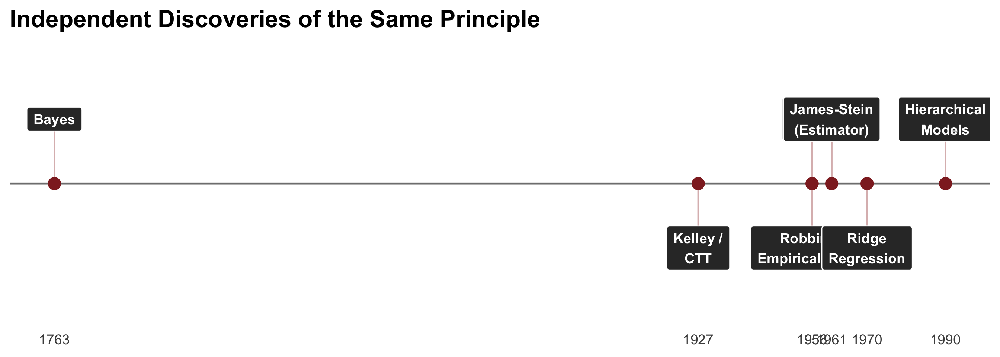

How to Estimate a Mean (and a Correlation), and What It Means for Science
2026-03-31
Every time we compute a mean per participant, we use an inadmissible estimator
This has consequences far beyond estimation — it corrupts correlations, reliability, rankings, and effect sizes
250 years of independent discoveries all point to the same fix
Stein’s Result (1956)
The sample mean \(\hat{\mu}_i = \bar{y}_i\) is the MVUE for a single mean
For 3 or more means simultaneously, it is inadmissible
There exists an estimator with strictly lower total MSE for every possible \(\boldsymbol{\mu}\)
So counterintuitive it became known as Stein’s Paradox
One Insight, Many Discoverers

Part I: The Univariate Case
Simulation Setup
\[\mu_i \sim \mathcal{N}(\mu_{\text{pop}},\; \sigma_{\text{pop}}), \quad y_{i,t} \sim \mathcal{N}(\mu_i,\; \sigma_{\text{obs}})\]
| \(N = 30\) individuals, \(n = 10\) observations each | |
| \(\sigma_{\text{pop}} = 2\) (between-person), \(\sigma_{\text{obs}} = 6\) (within-person) | |
| Reliability \(\approx \frac{\sigma^2_{\text{pop}}}{\sigma^2_{\text{pop}} + \sigma^2_{\text{obs}}/n} = \frac{4}{4 + 3.6}\) | ≈ 0.53 |
The Sample Mean: Unbiased but Noisy

All Shrinkage Methods Converge
Every method takes the same form:
\[\hat{\mu}_i = \hat{\mu}_{\text{pop}} + \hat{B} \cdot (\bar{y}_i - \hat{\mu}_{\text{pop}})\]
where \(\hat{B} = \dfrac{\sigma^2_{\text{pop}}}{\sigma^2_{\text{pop}} + \sigma^2_{\text{obs}}/n_i} \quad = \quad \dfrac{\text{Signal}}{\text{Signal} + \text{Noise}}\)
| Method | Shrinkage Factor |
|---|---|
| James-Stein (1961) | \(1 - \frac{(N-3)\hat{\sigma}^2_{\text{obs}}/n}{\sum(\bar{y}_i - \bar{\bar{y}})^2}\) |
| CTT / Kelley (1920s) | Reliability \(\hat{\rho}\) |
| Empirical Bayes | \(\frac{\hat{\sigma}^2_{\text{pop}}}{\hat{\sigma}^2_{\text{pop}} + \hat{\sigma}^2_{\text{obs}}/n_i}\) |
| Ridge Regression | \(\frac{n_i}{n_i + \lambda}\) where \(\lambda = \sigma^2_{\text{obs}}/\sigma^2_{\text{pop}}\) |
| Hierarchical Models (lme4, brms) | \(\frac{\hat{\sigma}^2_{\text{pop}}}{\hat{\sigma}^2_{\text{pop}} + \hat{\sigma}^2_{\text{obs}}/n_i}\) |
Six Methods, Same Answer

Shrinkage Is Data-Adaptive

Part II: The Bivariate Case — Where It Really Matters
The Two-Stage Problem
Most individual differences research follows a two-stage pipeline:
- Compute summary statistics per participant (means, difference scores, slopes)
- Enter those estimates into a secondary model (correlation, regression, group comparison)
Stage 1 treats estimates as if they were the true latent quantities
. . .
Everything downstream is corrupted
Attenuation of Correlations
\[r_{\text{obs}} = \rho_{\text{true}} \cdot \sqrt{\rho_{xx,1} \cdot \rho_{xx,2}}\]
Why? The covariance (numerator) is unbiased — measurement errors are independent, so cross-terms vanish
But the standard deviations (denominator) are inflated by \(\sigma^2_{\text{obs}}/n\)
| \(\rho_{xx,1}\) | \(\rho_{xx,2}\) | True \(\rho\) | Observed \(r\) |
|---|---|---|---|
| 0.5 | 0.5 | 0.5 | 0.25 |
| 0.3 | 0.3 | 0.5 | 0.15 |
| 0.5 | 0.8 | 0.5 | 0.32 |
A real effect of \(\rho = 0.5\) can look like \(r = 0.15\) — “not significant”
Simulation Setup
\[(\theta_{1,i}, \theta_{2,i}) \sim \text{MVN}\left(\boldsymbol{\mu}, \boldsymbol{\Sigma}_{\text{pop}}\right), \quad y_{k,i,t} \sim \mathcal{N}(\theta_{k,i}, \sigma_{\text{obs}})\]
| \(N = 50\) individuals, \(n = 10\) trials per measure | |
| \(\sigma_{\text{pop}} = 2\) (between-person), \(\sigma_{\text{obs}} = 6\) (within-person) | |
| \(\rho_{\text{true}} = 0.7\) | |
| Reliability \(\approx 4 / (4 + 3.6)\) | ≈ 0.53 |
| Expected \(r_{\text{obs}} \approx 0.7 \times \sqrt{0.53^2}\) | ≈ 0.37 |
The Naive Approach: Attenuated Correlation

Univariate Shrinkage Doesn’t Help
Part 1 taught us to shrink means. Natural idea: shrink each measure, then correlate.
\[\hat{\theta}_{1,i} = \hat{\mu}_1 + B_1(\bar{y}_{1,i} - \hat{\mu}_1), \quad \hat{\theta}_{2,i} = \hat{\mu}_2 + B_2(\bar{y}_{2,i} - \hat{\mu}_2)\]
But the Pearson \(r\) is scale-invariant: \(r(\hat{\theta}_1, \hat{\theta}_2) = r(\bar{y}_1, \bar{y}_2)\)
Univariate shrinkage just rescales each axis — it cannot change the correlation
To fix correlations, we need multivariate thinking
From Scalars to Matrices
Part 1 (Means)
\[\hat{\mu}_i = \hat{\mu}_{\text{pop}} + B(\bar{y}_i - \hat{\mu}_{\text{pop}})\]
where \(B = \dfrac{\sigma^2_{\text{pop}}}{\sigma^2_{\text{pop}} + \sigma^2_{\text{obs}}/n}\)
Part 2 (Correlations)
\[\hat{\boldsymbol{\theta}}_i = \hat{\boldsymbol{\mu}} + \mathbf{B}(\bar{\mathbf{y}}_i - \hat{\boldsymbol{\mu}})\]
where \(\mathbf{B} = \boldsymbol{\Sigma}_{\text{pop}}\left(\boldsymbol{\Sigma}_{\text{pop}} + \boldsymbol{\Sigma}_{\text{obs}}/n\right)^{-1}\)
The off-diagonal elements of \(\mathbf{B}\) are non-zero when the measures are correlated
Each estimate borrows strength from both measures — this is what changes the correlation
Multivariate Shrinkage in Action

All Multivariate Methods Converge

The Generative Modeling Solution
Instead of:
- Estimate parameters → 2. Correlate estimates
Jointly model both measures and their relationship:
\[y_{k,i,t} \sim \mathcal{N}(\theta_{k,i}, \sigma_{\text{obs},k}), \quad \begin{bmatrix} \theta_i^{(1)} \\ \theta_i^{(2)} \end{bmatrix} \sim \mathcal{N}\left(\boldsymbol{\mu}, \boldsymbol{\Sigma}\right)\]
The correlation in \(\boldsymbol{\Sigma}\) is estimated jointly with the individual parameters
Measurement error is absorbed by the likelihoods, not propagated into the correlation
This implements the matrix shrinkage principle — with proper uncertainty
Part III: The Reliability Paradox
Replicable Effects Aren’t Reliable?
Hedge, Powell, & Sumner (2017) tested the reliability of classic cognitive tasks:
| Task | Group Effect | Test-Retest ICC |
|---|---|---|
| Stroop | Massive (~80ms) | 0.60 |
| Flanker | Robust | 0.40 |
| Go/No-Go | Robust | 0.25 |
Conclusion: “These tasks are severely limited for individual differences research”
But is that the right conclusion?
The Problem Is the Estimator, Not the Task
Traditional approach:
\[\text{Stroop}_i = \overline{RT}_{i,\text{inc}} - \overline{RT}_{i,\text{con}}\]
Then: \(\text{ICC} = \text{cor}(\text{Stroop}_{i,t_1}, \text{Stroop}_{i,t_2})\)
Implicitly assumes infinite precision in each person’s Stroop estimate
Hierarchical approach:
\[RT_{i,t} \sim \mathcal{N}(\mu_i + \beta_i \cdot \text{condition}_t, \; \sigma_i)\]
\[\begin{bmatrix} \mu_i^{t_1} \\ \beta_i^{t_1} \\ \mu_i^{t_2} \\ \beta_i^{t_2} \end{bmatrix} \sim \text{MVN}(\boldsymbol{\mu}, \boldsymbol{\Sigma})\]
Reliability = correlation in \(\boldsymbol{\Sigma}\) between \(\beta_i^{t_1}\) and \(\beta_i^{t_2}\)
Result: The Paradox Disappears

Broader Implications
(Haines, Kvam, et al., 2020; Haines, Sullivan-Toole, & Olino, 2023)
The generative modeling framework combines:
- Hierarchical modeling — shrinkage / pooling across individuals
- Structural equation modeling — latent correlations between constructs
- Theory-informed likelihoods — respect the data-generating process
This isn’t just about means — it applies to any individual-level parameter:
Learning rates, drift rates, sensitivity parameters, factor scores…
Part IV: Real-World Examples
The Dunning-Kruger Effect: Measurement Error in Action

Original finding (Dunning & Kruger, 1999):
Low-skill people overestimate; high-skill underestimate

Pure regression to the mean:
Any two variables with \(r < 1\) produce this pattern
Modeling the DK Effect Generatively
Noise + Bias Model (Burson et al., 2006; Haines, 2021):
\[\theta_i \sim \mathcal{N}(0, 1)\] \[y_{i,\text{obj}} \sim f(\theta_i) \qquad y_{i,\text{per}} \sim f(\theta_i + b, \; \sigma_{\text{per}})\]
Two psychological parameters:
- \(b\): general overconfidence bias
- \(\sigma_{\text{per}}\): perception noise
Fitting to Pennycook et al. (2017) data: strong evidence for both \(b > 0\) and \(\sigma > 1\)
The DK effect is real — but only detectable with a generative model
Iowa Gambling Task: Better Estimators, Better Reliability

The Replication Crisis Connection
If your estimator has reliability \(\rho\) = 0.3:
Maximum observable \(r\) between two such measures = \(\sqrt{0.3 \times 0.3}\) = 0.30
A true \(r = 0.4\) appears as \(r = 0.12\)
— “not significant” with \(n = 200\)
How many “null results” in individual differences are really measurement error?
(Haines, Sullivan-Toole, & Olino, 2023, Biol Psychiatry: CNNI)
When Does This Break?
Assumptions and Limitations
Non-normal populations — heavy tails or mixtures → shrinkage toward grand mean harmful for true outliers
Non-exchangeability — shrinking toward wrong target (e.g., patients toward controls) worse than no shrinkage
Misspecified likelihoods — if your generative model is wrong, shrinkage can introduce systematic bias
This is where hierarchical models win over JS/CTT/EB
You can model the structure rather than assuming exchangeability
Conclusion
What You Should Take Away
1. The sample mean is inadmissible — use shrinkage estimators (you probably already do via lmer/brms)
2. The real damage is downstream — noisy estimates corrupt correlations, reliability, rankings
3. Don’t do two stages — model everything jointly when possible
4. Report model-based reliability — not summary-statistic reliability
5. Before concluding “null” — ask whether measurement error could explain it
One Principle, Many Names

The sample mean — and the sample correlation — had a good run.
:D
Questions?
Nathaniel Haines
Blog: haines-lab.com (Part 1) | Part 2
Key references:
- Haines, Kvam, et al. (2020). PsyArXiv — Reliability paradox & generative models
- Haines et al. (2023). Computational Psychiatry — IGT test-retest reliability
- Haines, Sullivan-Toole, & Olino (2023). Biol Psychiatry: CNNI — Generative models for neuroscience